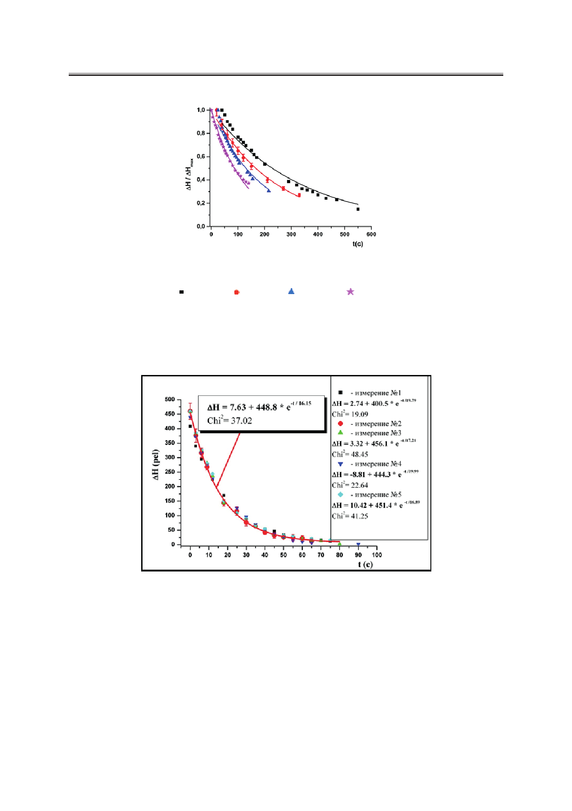

С.В. Пасечник, Д.В. Шмелева, А.В. Торчинская, О.А. Семина, А.А. Дюкин
Рис. 3. Временные зависимости относительных разностей уровней для этанола.
Диаметр открытых трубок D =3.17 мм, диаметр пор d:
– 0.3 мкм; – 0.4 мкм; – 0.5 мкм; – 0.6 мкм.
ний (рис. 4). Это подтверждает простую теорию метода и позволяет вычислить констан-
ты KcN, необходимые для определения эффективной вязкости нематического жидкого
кристалла. Результат сравнения между экспериментально определенными значениями
KcN и полученными с помощью уравнения (11) приведены в таблице.
Рис. 4. Временные зависимости изменений уровней менисков для этанола
в жидкокристаллической ячейке c плёнкой, где диаметр пор d=2 мкм.
Некоторое несоответствие объясняется возможными ошибками в определении диа-
метра пор (до 10%), которые могут привести к существенным ошибкам в KcN из-за силь-
ной зависимости (r4) объемной скорости потока от радиуса пор и возможного перекрытия
пор. Такая ситуация обычно встречается в традиционных измерениях сдвиговой вязко-
сти с помощью цилиндрических капилляров.
Аналогичные зависимости ΔH(t) в случае затухающего потока нематического жидко-
го кристалла (ЖК-440 [11] – 2/3 части р-n-бутил-р-метилоксиазоксибензола и 1/3 часть
р-n-бутил-р-гептаноилоксиазоксибензола) для двух образцов с различным диаметром
пор при двух значениях температуры приведены на рис. 5.
Российский технологический журнал 2017 Том 5 № 5
31